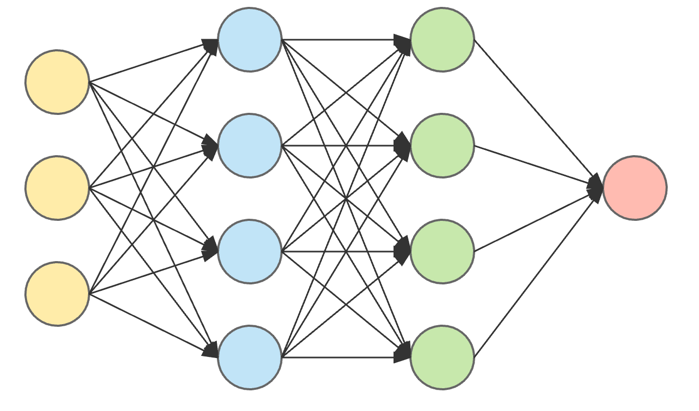
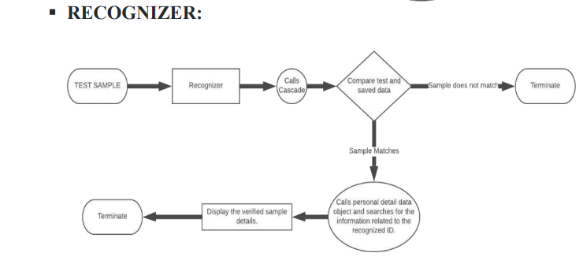
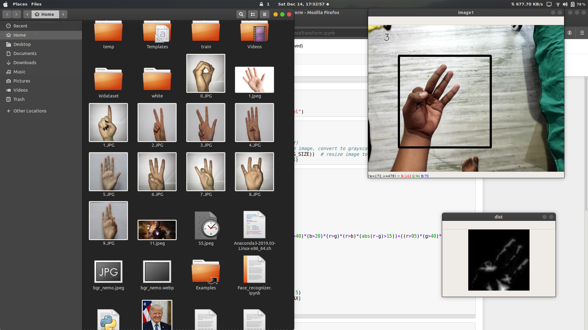

GESTURE INTERPRETER FOR SPECIALLY ABLED
It is observed that specially abled people are unable to communicate properly due to the lack of knowledge about their sign language amongst common people. Gesture Interpretor for Specially Abled as the name suggests this system aims at encountering this problem and proposing a feasible solution. It’s aim is to build a human responsive system that can aid specially abled (blind, deaf and aphonic) people by interpreting the sign language (i.e. hand gestures).

GESTURE RECOGNITION
Sign language of differently abled people is mostly composed of hand gestures. Gesture recognition is a technique that uses the concepts of computer vison which is used for the interaction between human and computer or it can be for any automation implementation purpose. Further converting these gestures to text and speech so that it can be easily understood by others.
MODEL
Model for gesture recognition was trained for the following techniques:
- Basic Convolutional Neural Networks(CNNs)
- SVM(Support Vector Machines)
- Object Path Tracking for handwritten text recognition
- Long Short Term Memory(LSTM)
- Tacotron(GRU+RNN) for text-to-speech conversion

"

WORKFLOW
- The cameras capture the gestures and store it in a database.
- The model is trained using convolutional neural network uses the gesture data in database with phrases corresponding to the given gesture.
- If the sign signal from the feed matches the trained gesture, the phrase is shown as text on the screen.
- This text is transferred as string and converted to speech using suitable API in mp3 format.
RESULTS
- Accuracy of 100% was obtained on numeric(0-9) gestures.
- Accuracy of 90% was obtained on alphabet gestures trained for 10 letters(a,g,h,l,o,q,v,w,y,z)

"